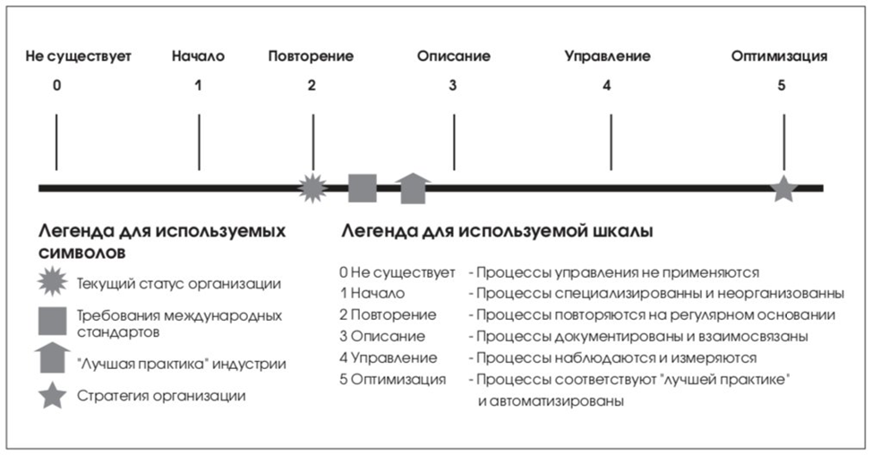

Модели зрелости
Модели зрелости в CobiT предназначены для контроля над ИТ-процессами организации. Они базируются на определении уровня развития организации от несуществующего до оптимизированного (от 0 до 5 уровня модели зрелости). Этот подход был привнесен в CobiT из Моделей Зрелости, разработанных Институтом проектирования и разработки программного обеспечения (Software Engineering Institute), созданных для оценки уровня зрелости разработки программного обеспечения.

Назначение модели
Модели зрелости не подсказывают как улучшить работу компании и не объясняют, как работать с персоналом, также нет готовых руководств и по применению моделей зрелости. Рекомендуется каждой конкретной компании разработать подобное руководство для своего бизнеса или пригласить сторонних консультантов для решения этого вопроса. Модели зрелости предназначены для организации эффективного управления. Они определяют ключевые действия, которые указывают, что надо сделать для достижения требуемого качества и содержат способы контроля над правильностью выполнения ключевых ИТ-процессов и методы их корректировки. Ключевые действия подробно описаны в Руководстве на абстрактном уровне, а в процессе использования MM компания может выбрать произвольную степень их формализации.
Беря за основу шкалу моделей зрелости, разработанную для каждого из 34 ИТпроцесса CobiT, руководитель может выяснить следующие сведения:
- Текущий статус организации – оценить, на какой стадии организация находится сегодня.
- Текущий статус лучшей практики в этой отрасли – сравнить свою организацию с лучшей организацией в этой отрасли.
- Текущий статус международных стандартов – провести дополнительное сравнение текущего статуса организации с «лучшей практикой» или международными стандартами.
- Статус организации после усовершенствования (реализация стратегии организации) – оценить стратегию организации, каких результатов организация хочет достичь.
Модель Зрелости Управления ИТ, для бизнеса, предназначена для управления ИТпроцессами с целью увеличения ценности ИТ, при соблюдении равновесия между риском и прибылью.
Стадии процессов
0. Не существует
Полное отсутствие управления ИТ: организация не осознаёт проблемы и не ведёт никакой деятельности по их решению.
1. Начало (Анархия)
Проблемы ИТ признаются, но решения носят хаотичный, несистемный характер, без стандартов и единого подхода.
2. Повторение (Фольклор)
Осознание проблем есть, процессы начинают формироваться и интегрироваться в управление, но стандартизация и обучение отсутствуют, а инструменты используются частично.
3. Описание (Стандарты)
Процессы формализованы и документированы, внедрены метрики и обучение, повышается эффективность, но контроль и управление остаются частично ограниченными.
4. Управление (Измеряемый)
Процессы полностью контролируются, измеряются и связаны со стратегией бизнеса, внедрены SLA, управление становится системным и основанным на данных.
5. Оптимизация (Оптимизируемый)
ИТ полностью интегрированы в бизнес, процессы постоянно улучшаются, используются лучшие практики и технологии, достигается максимальная эффективность.